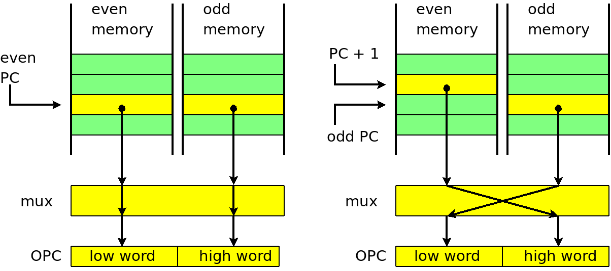
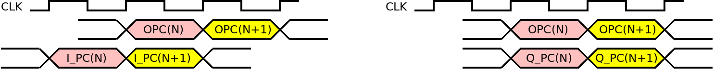

| Previous Lesson | Table of Content | Next Lesson |
|---|
In this lesson we will design the opcode fetch stage of the CPU core. The opcode fetch stage is the simplest stage in the pipeline. It is the stage that put life into the CPU core by generating a sequence of opcodes that are then decoded and executed. The opcode fetch stage is sometimes called the sequencer of the CPU.
Since we use the Harvard architecture with separate program and data memories, we can simply instantiate the program memory in the opcode fetch stage. If you need more memory than your FPGA provides internally, then you can design address and data buses towards an external memory instead (or in addition). Most current FPGAs provide a lot of internal memory, so we can keep things simple.
The opcode fetch stage contains a sub-component pmem, which is is the program memory. The main purpose of the opcode fetch stage is to manipulate the program counter (PC) and to produce opcodes. The PC is a local signal:
69 signal L_PC : std_logic_vector(15 downto 0);src/opc_fetch.vhd
The PC is updated on every clock with its next value. The T0 output is cleared when the WAIT signal is raised. This causes the T0 output to be '1' on the first cycle of a 2 cycle instruction and '0' on the second cycle:
86 lpc: process(I_CLK) 87 begin 88 if (rising_edge(I_CLK)) then 89 L_PC <= L_NEXT_PC; 90 L_T0 <= not L_WAIT; 91 end if; 92 end process;src/opc_fetch.vhd
The next value of the PC depends on the CLR, WAIT, LOAD_PC, and LONG_OP signals:
94 L_NEXT_PC <= X"0000" when (I_CLR = '1') 95 else L_PC when (L_WAIT = '1') 96 else I_NEW_PC when (I_LOAD_PC = '1') 97 else L_PC + X"0002" when (L_LONG_OP = '1') 98 else L_PC + X"0001";src/opc_fetch.vhd
The CLR signal, which overrides all others, resets the PC to 0. It is generated at power on and when the reset input of the CPU is asserted. The WAIT signal freezes the PC at its current value. It is used when an instruction needs two CLK cycles to complete. The LOAD_PC signal causes the PC to be loaded with the value on the NEW_PC input. The LOAD_PC signal is driven by the execution stage when a jump instruction is executed. If neither CLR, WAIT, or LOAD_PC is present then the PC is advanced to the next instruction. If the current instruction is one of JMP, CALL, LDS and STS, then it has a length of two 16-bit words and LONG_OP is set. This causes the PC to be incremented by 2 rather than by the normal instruction length of 1:
100 -- Two word opcodes: 101 -- 102 -- 9 3210 103 -- 1001 000d dddd 0000 kkkk kkkk kkkk kkkk - LDS 104 -- 1001 001d dddd 0000 kkkk kkkk kkkk kkkk - SDS 105 -- 1001 010k kkkk 110k kkkk kkkk kkkk kkkk - JMP 106 -- 1001 010k kkkk 111k kkkk kkkk kkkk kkkk - CALL 107 -- 108 L_LONG_OP <= '1' when (((P_OPC(15 downto 9) = "1001010") and 109 (P_OPC( 3 downto 2) = "11")) -- JMP, CALL 110 or ((P_OPC(15 downto 10) = "100100") and 111 (P_OPC( 3 downto 0) = "0000"))) -- LDS, STS 112 else '0';src/opc_fetch.vhd
The CLR, SKIP, and I_INTVEC inputs are used to force a NOP (no operation) opcode or an "interrupt opcode" onto the output of the opcode fetch stage. An interrupt opcode is an opcode that does not belong to the normal instruction set of the CPU (and is therefore not generated by assemblers or compilers), but is used internally to trigger interrupt processing (pushing of the PC, clearing the interrupt enable flag, and jumping to specific locations) further down in the pipeline.
133 L_INVALIDATE <= I_CLR or I_SKIP; 134 135 Q_OPC <= X"00000000" when (L_INVALIDATE = '1') 136 else P_OPC when (I_INTVEC(5) = '0') 137 else (X"000000" & "00" & I_INTVEC); -- "interrupt opcode"src/opc_fetch.vhd
CLR is derived from the reset input and also resets the program counter. SKIP comes from the execution stage and is used to invalidate parts of the pipeline, for example when a decision was made to take a conditional branch. This will be explained in more detail in the lesson about branching.
The program memory is declared as follows:
36 entity prog_mem is 37 port ( I_CLK : in std_logic; 38 39 I_WAIT : in std_logic; 40 I_PC : in std_logic_vector(15 downto 0); -- word address 41 I_PM_ADR : in std_logic_vector(11 downto 0); -- byte address 42 43 Q_OPC : out std_logic_vector(31 downto 0); 44 Q_PC : out std_logic_vector(15 downto 0); 45 Q_PM_DOUT : out std_logic_vector( 7 downto 0)); 46 end prog_mem;src/prog_mem.vhd
The program memory is a dual port memory. This means that two different memory locations can be read or written at the same time. We don't write to the program memory, be we would like to read two addresses at the same time. The reason are the LPM (load program memory) instructions. These instructions read from the program memory while the program memory is fetching the next instructions. In a way these instructions violate the Harvard architecture, but on the other hand they are extremely useful for string constants in C. Rather than initializing the (typically smaller) data memory with these constants, one can leave them in program memory and access them using LPM instructions,
Without a dual port memory, we would have needed to stop the pipeline during the execution of LPM instructions. Use of dual port memory avoids this additional complexity.
The second port used for LPM instructions consists of the address input PM_ADR and the data output PM_DOUT. PM_ADR is a 12-bit byte address (and consequently PM_DOUT is an 8-bit output. In contrast, the other port uses an 11-bit word address.
The other signals of the program memory belong to the first port which is used for opcode fetches.
The vast majority of AVR instructions are single-word (16-bit) instructions. There are 4 exceptions, which are CALL, JMP, LDS, and STS. These instructions have addresses (the target address for CALL and JMP and data memory address for $LDS# and STS) in the word following the opcode.
There are two ways to handle such opcodes. One way is to look back in the pipeline when the second word is needed. When one of these instructions reaches the execution stage, then the next word is clocked into the decoding stage (so we could fetch it from there). It might lead to complications, however, when it comes to invalidating the pipeline, insertion of interrupts and the like.
The other way, and the one we choose, is to divide the program memory into an even memory and an odd memory. The internal memory modules in an FPGA are anyhow small and therefore using two memories is almost as simple as using one (both would consist of a number of smaller modules).
There are two cases to consider: (1) an even PC (shown on the left of the following figure) and (2) an odd PC shown on the right. In both cases do we want the (combined) memory at address PC to be stored in the lower word of the OPC output and the next word (at PC+1) in the upper word of OPC.

We observe the following:
In VHDL, we express this like:
252 L_PC_O <= I_PC(10 downto 1);
253 L_PC_E <= I_PC(10 downto 1) + ("000000000" & I_PC(0));
254 Q_OPC(15 downto 0) <= M_OPC_E when L_PC_0 = '0' else M_OPC_O;
255 Q_OPC(31 downto 16) <= M_OPC_E when L_PC_0 = '1' else M_OPC_O;
src/prog_mem.vhd
The output multiplexer uses the PC and PM_ADR of the previous cycle, so we need to remember the lower bit(s) in signals PC_0 and PM_ADR_1_0:
224 pc0: process(I_CLK) 225 begin 226 if (rising_edge(I_CLK)) then 227 Q_PC <= I_PC; 228 L_PM_ADR_1_0 <= I_PM_ADR(1 downto 0); 229 if ((I_WAIT = '0')) then 230 L_PC_0 <= I_PC(0); 231 end if; 232 end if; 233 end process;src/prog_mem.vhd
The split into two memories makes the entire program memory 32-bit wide. Note that the PC is a word address, while PM_ADR is a byte address.
The entire program memory consists of 8 memory modules, four for the even half (components pe_0, pe_1, pe_2, and pe_3) and four for the odd part (po_0, po_1, po_2, and po_3).
We explain the first module in detail:
102 pe_0 : RAMB4_S4_S4 --------------------------------------------------------- 103 generic map(INIT_00 => pe_0_00, INIT_01 => pe_0_01, INIT_02 => pe_0_02, 104 INIT_03 => pe_0_03, INIT_04 => pe_0_04, INIT_05 => pe_0_05, 105 INIT_06 => pe_0_06, INIT_07 => pe_0_07, INIT_08 => pe_0_08, 106 INIT_09 => pe_0_09, INIT_0A => pe_0_0A, INIT_0B => pe_0_0B, 107 INIT_0C => pe_0_0C, INIT_0D => pe_0_0D, INIT_0E => pe_0_0E, 108 INIT_0F => pe_0_0F) 109 port map(ADDRA => L_PC_E, ADDRB => I_PM_ADR(11 downto 2), 110 CLKA => I_CLK, CLKB => I_CLK, 111 DIA => "0000", DIB => "0000", 112 ENA => L_WAIT_N, ENB => '1', 113 RSTA => '0', RSTB => '0', 114 WEA => '0', WEB => '0', 115 DOA => M_OPC_E(3 downto 0), DOB => M_PMD_E(3 downto 0));src/prog_mem.vhd
The first line instantiates a module of type RAMB4_S4_S4, which is a dual-port memory module with two 4-bit ports. For a Xilinx FPGA you can used these modules directly by uncommenting the use of the UNISIM library. For functional simulation we have provided a RAMB4_S4_S4.vhd component in the test directory. This component emulates the real RAMB4_S4_S4 as good as needed.
The next lines define the content of each memory module by means of a generic map. The elements of the generic map (like pe_0_00, pe_0_01, and so forth) define the initial memory content of the instantiated module. pe_0_00, pe_0_01, .. are themselves defined in prog_mem_content.vhd which is included in the library section:
34 use work.prog_mem_content.all;src/prog_mem.vhd
The process from a C (or C++) source file hello.c to the final FPGA is then:
There are other ways of initializing the memory modules, such as updating sections of the bitmap file, but we found the above sequence easier to use.
After the generic map, follows the port map of the memory module. The two addresses ADDRA and ADDRB of the two ports come from the PC and PM_ADR inputs as already described.
Both ports are clocked from CLK. Since the program memory is read-only, the DIA and DIB inputs are not used (set to 0000) and WEA and WEB are 0. RSTA and RSTB are not used either and are set to 0. ENA is used for keeping the OPC when the pipeline is stopped, while ENB is not used. The memory outputs DOA and DOB go to the output multiplexers of the two ports.
Q_PC is I_PC delayed by one clock. The program memory is a synchronous memory, which has the consequence that the program memory output OPC for a given I_PC is always one clock cycle behind as shown in the figure below on the left.

By clocking I_PC once, we re-align Q_PC and OPC as shown on the right:
227 Q_PC <= I_PC;src/prog_mem.vhd
The vast majority of instructions executes in one cycle. Some need two cycles because they involve reading of a synchronous memory. For these signals WAIT signal is generated on the first cycle:
114 -- Two cycle opcodes: 115 -- 116 -- 1001 000d dddd .... - LDS etc. 117 -- 1001 0101 0000 1000 - RET 118 -- 1001 0101 0001 1000 - RETI 119 -- 1001 1001 AAAA Abbb - SBIC 120 -- 1001 1011 AAAA Abbb - SBIS 121 -- 1111 110r rrrr 0bbb - SBRC 122 -- 1111 111r rrrr 0bbb - SBRS 123 -- 124 L_WAIT <= '0' when (L_INVALIDATE = '1') 125 else '0' when (I_INTVEC(5) = '1') 126 else L_T0 when ((P_OPC(15 downto 9) = "1001000" ) -- LDS etc. 127 or (P_OPC(15 downto 8) = "10010101") -- RET etc. 128 or ((P_OPC(15 downto 10) = "100110") -- SBIC, SBIS 129 and P_OPC(8) = '1') 130 or (P_OPC(15 downto 10) = "111111")) -- SBRC, SBRS 131 else '0';src/opc_fetch.vhd
The opcode fetch stage is also responsible for part of the interrupt handling. Interrupts are generated in the I/O block by setting INTVEC to a value with the highest bit set:
169 if (L_RX_INT_ENABLED and U_RX_READY) = '1' then 170 if (L_INTVEC(5) = '0') then -- no interrupt pending 171 L_INTVEC <= "101011"; -- _VECTOR(11) 172 end if; 173 elsif (L_TX_INT_ENABLED and not U_TX_BUSY) = '1' then 174 if (L_INTVEC(5) = '0') then -- no interrupt pending 175 L_INTVEC <= "101100"; -- _VECTOR(12) 176 end if;src/io.vhd
The highest bit of INTVEC indicates that the lower bits contain a valid interrupt number. INTVEC proceeds to the cpu core where the upper bit is and'ed with the global interrupt enable bit (in the status register):
241 L_INTVEC_5 <= I_INTVEC(5) and R_INT_ENA;src/cpu_core.vhd
The (possibly modified) INTVEC then proceeds to the opcode fetch stage. If the the global interrupt enable bit was set, then the next valid opcode is replaced by an "interrupt opcode":
135 Q_OPC <= X"00000000" when (L_INVALIDATE = '1') 136 else P_OPC when (I_INTVEC(5) = '0') 137 else (X"000000" & "00" & I_INTVEC); -- "interrupt opcode"src/opc_fetch.vhd
The interrupt opcode uses a gap after the NOP instruction in the opcode set of the AVR CPU. When the interrupt opcode reaches the execution stage then is causes a branch to the location determined by the lower bits of INTVEC, pushes the program counter, and clears the interrupt enable bit. This happens a few clock cycles later. In the meantime the opcode fetch stage keeps inserting interrupt instructions into the pipeline. These additional interrupt instructions are being invalidated by the execution stage when the first interrupt instruction reaches the execution stage.
| Previous Lesson | Table of Content | Next Lesson |
|---|